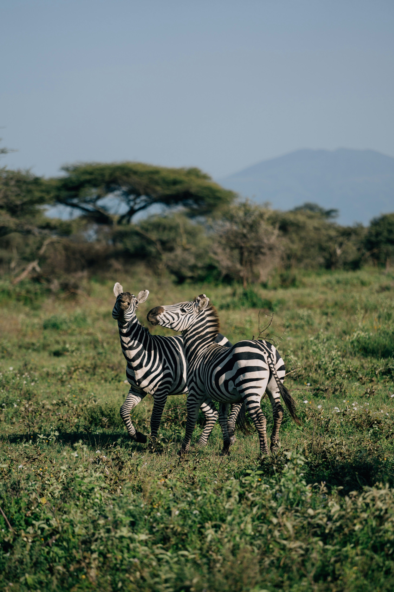
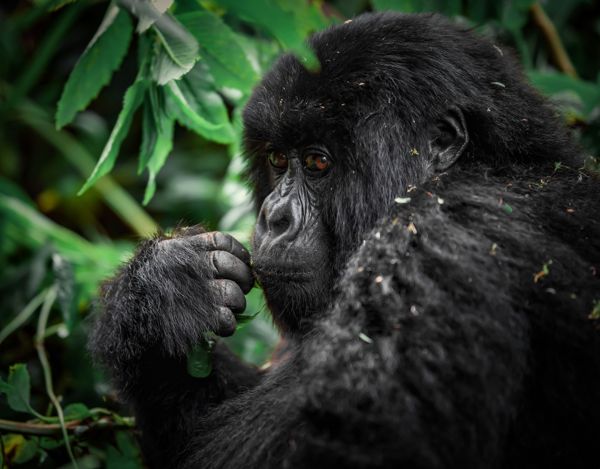
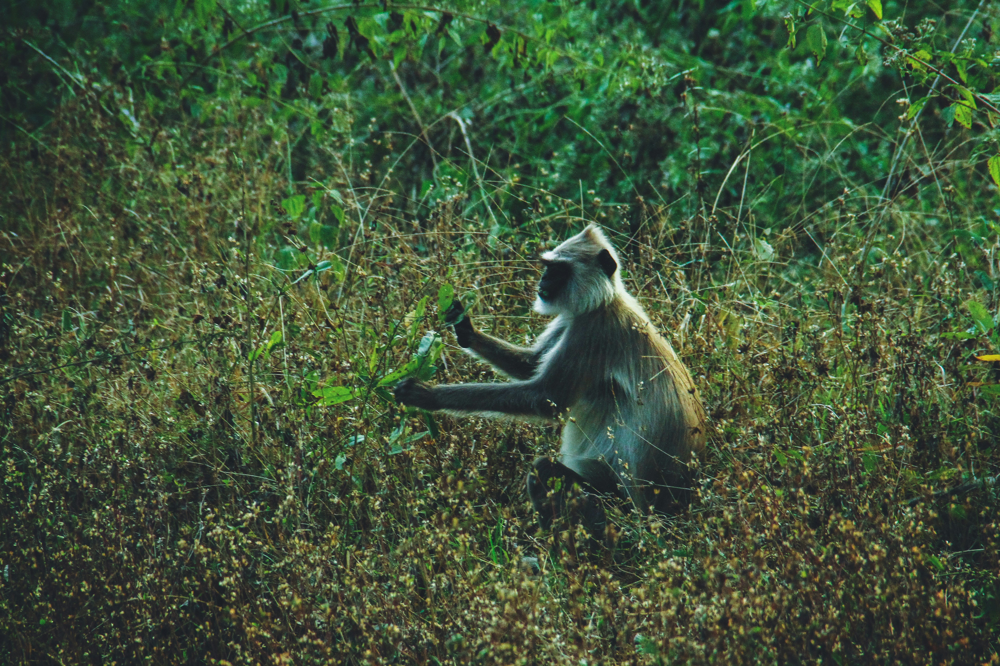
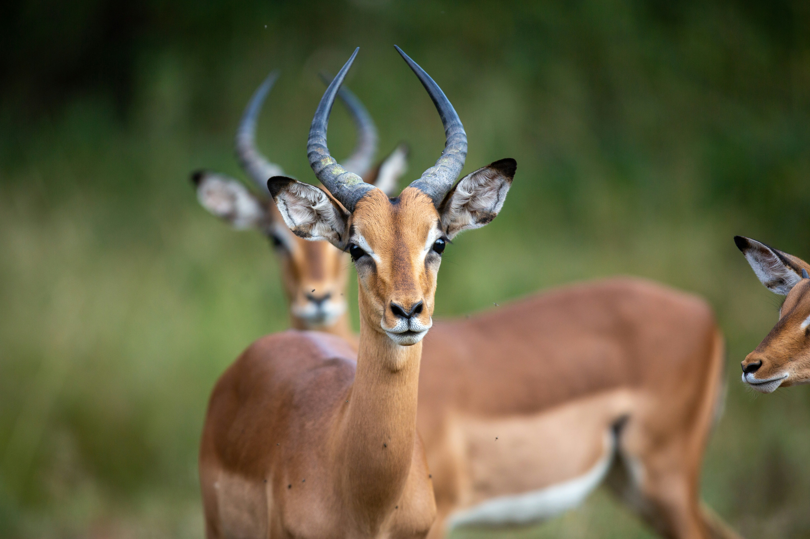
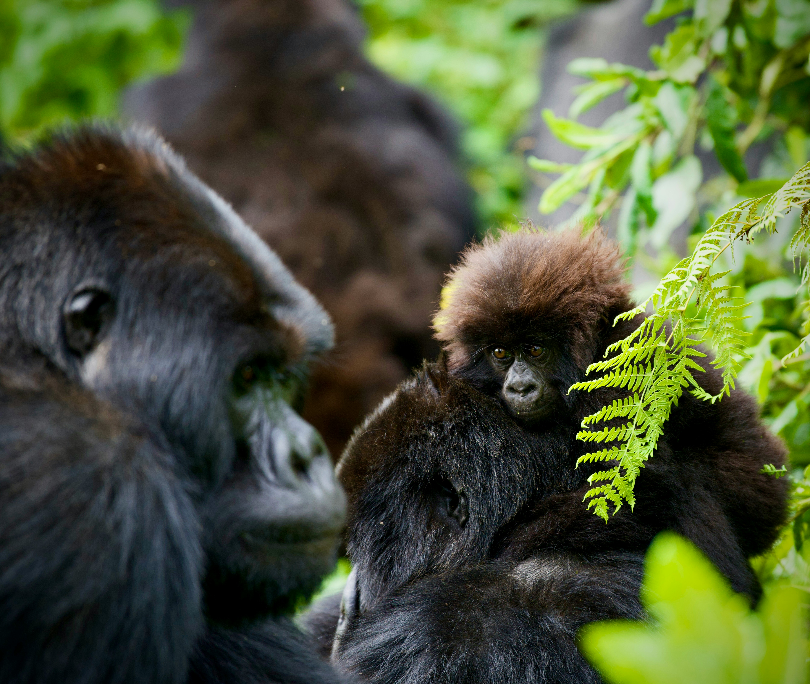
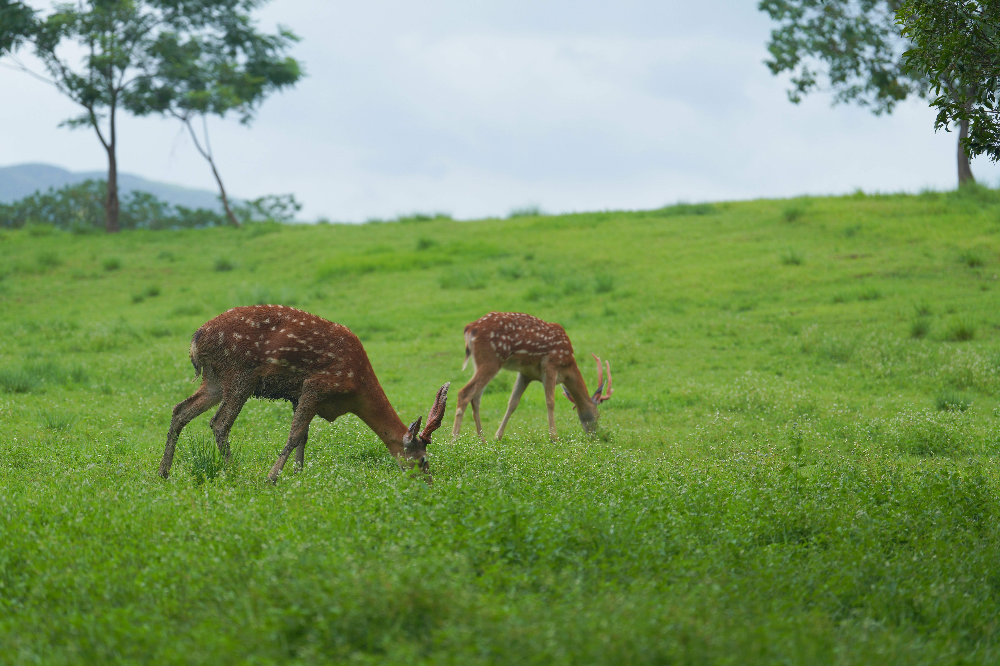

search
language
Where mountain gorillas meet thousand hills in Africa's green heart
In the land of a thousand hills, Rwanda captivates with mountain gorilla encounters and pristine rainforests – offering intimate wildlife experiences in Africa's cleanest nation.
"We were experienced Africa travelers, but Rwanda completely transformed our perspective," wrote a recent visitor. "Coming face-to-face with mountain gorillas in their misty forest home was profoundly moving. The country's cleanliness, organization, and warm hospitality exceeded all expectations."
The same traveler described unforgettable primate encounters: "Sitting mere feet from a gorilla family as they groomed and played was the most humbling wildlife experience of our lives. Rwanda delivers moments that stay with you forever."
Rwanda consistently surprises visitors. "We were amazed by how green and organized everything was," wrote a first-time visitor. "The landscapes of rolling hills and the warmth of the Rwandan people created an experience we never anticipated."
Rwanda leaves a profound impression with its remarkable transformation and commitment to conservation, offering visitors both incredible wildlife encounters and inspiring human stories.
A Rwandan safari takes you through breathtaking landscapes – from the mist-covered volcanoes of Volcanoes National Park to the dense rainforests of Nyungwe, from the savannah plains of Akagera to the shores of Lake Kivu.
Trek through bamboo forests to encounter endangered mountain gorillas, track chimpanzees through ancient rainforest canopies, cruise along lake shores teeming with hippos, and witness the country's incredible conservation success stories.
Rwanda's diverse wildlife areas and cultural sites naturally group into four main regions.
Rwanda's most famous destination encompasses the misty Volcanoes National Park, home to endangered mountain gorillas and golden monkeys. This is where Dian Fossey conducted her groundbreaking research and where visitors can trek through bamboo forests for unforgettable primate encounters.
For incredible primate diversity and ancient rainforest experiences, Nyungwe Forest offers chimpanzee tracking, colobus monkey encounters, and the spectacular canopy walkway suspended high above the forest floor.
The savannah wilderness of Akagera National Park provides classic big game viewing with lions, elephants, giraffes, and abundant antelope species roaming the plains and wetlands.
Rwanda's beautiful Lake Kivu offers serene beaches and island exploration, while cultural sites including the Kigali Genocide Memorial provide profound insights into the country's remarkable journey.

Each of our holidays is as distinct as the traveller undertaking it. The itineraries here are just examples of what is possible, with costs and details; see all 18 Rwanda safari ideas here.
you'll travel in a private 4WD with the same expert guide throughout, offering flexibility and deep cultural insights throughout your journey.
you'll experience guided treks to see gorillas and chimpanzees, accompanied by experienced trackers and park rangers who ensure both safety and minimal disturbance to the wildlife.
showcase Rwanda's remarkable transformation and rich heritage. Many travellers combine wildlife experiences with cultural encounters for a complete understanding of this inspiring nation.
Call us now to speak to a Rwanda expert who can address your questions and craft your perfect trip.

5 Days / 4 Nights
Experience the magic of Volcanoes National Park with gorilla trekking and golden monkey tracking in Rwanda's misty forests.

7 Days / 6 Nights
Explore Rwanda's stunning landscapes and diverse wildlife including gorillas and golden monkeys.

9 Days / 8 Nights
Discover Rwanda's rich biodiversity and culture with an extended safari experience.

11 Days / 10 Nights
Experience the best of Rwanda's wildlife and culture in this comprehensive grand safari.

7 Days / 6 Nights
Compare gorilla trekking experiences in both Rwanda and Uganda for the ultimate primate adventure.

6 Days / 5 Nights
Combine gorilla trekking with cultural experiences, community visits, and insights into Rwanda's remarkable transformation.
Explore Rwanda's premier wildlife destinations and their unique characteristics
Visit our trip chooser to explore your options and find inspiration for your perfect African adventure